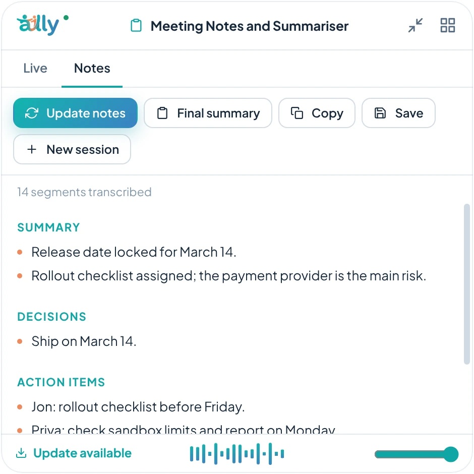

Meeting notes
AI meeting notes for Windows, on your own PC
Ally's Meeting Notes and Summariser mode listens to a call and keeps a clean set of notes beside it, so you can pay attention instead of typing.
- Rolling notesNotes update at an interval you choose while people talk, so a long meeting never turns into one giant summary at the end.
- Decisions and action itemsNotes are organised into summary, decisions, action items and open questions.
- Copy or saveCopy the notes, or save them as a Markdown file when the call ends. Every session is also saved on your PC.
- Private by defaultIn offline mode speech recognition and the summaries run on your PC. Nothing is uploaded.

Questions
Does it record audio?
Ally transcribes what it hears to produce notes. Check the rules for recording and transcription where you work, and tell participants when required.
Can it use a document as context?
Yes. Add the agenda or a spreadsheet as reference material and Ally can refer to it.
More: Interview assistantLecture notesOffline AI assistantGeneral FAQ